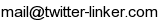

Twitter-Linkerは、「最近リプライを飛ばしたユーザ」の繋がりを可視化するサービスです。
ページ上部のフォームにチェックしたいユーザの名前を入力することで利用を開始することができます。

表示されたアイコンをシングルクリックすることで、最近リプライを飛ばしたユーザを表示することができます。
また、新たに表示されたユーザのアイコンをクリックすることで、ユーザの繋がりがどんどん広がっていきます。
アイコンをダブルクリックすると、そのユーザのタイムラインが表示されます。
ご意見・ご感想がありましたら、



からご連絡をよろしくお願い致します。

* 広告出稿も募集中です。